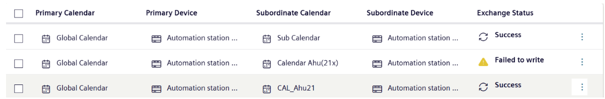

Calendar Manager
Overview
You want to make sure that all of the BACnet calendars for a group of devices stay in sync. Calendar Manager allows you to designate one device’s BACnet calendar the “primary calendar,” and one or more other devices as “subordinate calendars.” All subordinate calendars will then stay in sync with the primary calendar.
Background
Beginning with ABT 6.0, there is support for global calendar objects on certain devices (at the time of writing this includes the PXC 4,5 and 7). For the purposes of this guide, “global” and “primary” calendars are the same. Calendar Manager allows Desigo CC to read and configure these on-device calendars from the Flex Client. For more on global calendar objects see http://www.siemens.com/download?A6V13193565
In BACnet, calendars are used when you need to deviate from the normal schedule. For example, you might want to command a different set of points for your devices during a holiday or special maintenance window. For general background on schedules and calendars, see the “BACnet Schedules” topic within the Desigo CC Operating Reference.
Prerequisites
BACnet calendars are located on the devices themselves, allowing them to run independent from the Desigo CC management station. The Flex Client cannot add new BACnet schedules or calendars to a device, but it does allow you to modify them.
Note:If you need to add a new BACnet schedule or calendar, do this from the Desigo CC management station.
For instructions on how to add new BACnet schedules or calendars, see the topic Operating Step-by-Step -> Scheduling -> Create a BACnet Schedule in the Desigo CC management station help.
Be sure that:
- A Desigo CC Flex Client instance is running at least version 9.x
- At least some devices on your network have a Calendar Object configured. For instructions on setting up calendar objects, see the ABT Site documentation: ABT Site components -> Engineering -> Programming -> Properties Tab -> Element Properties Tab -> Assigning calendars to schedulers.
- A Calendar Manager Object has been configured on one of the devices in your network.
Finding the Calendar Manager Interface
In the Desigo CC interface, locate the Calendar Manager object within the field network menu for your primary and subordinate devices. This can be accomplished through several different views:
- In Application View, select Schedules -> BACnet Calendars -> <Your Field Network> -> Hardware -> <Your Device> -->Calendar Manager .
- In Logical View, find the folder for your field network. Under the Global folder, you should find the Calendar Manager object.
- In Management View, select Field Networks -> <Your Field Network> -> Hardware -> <Your Device> --> Calendar Manager .
Desigo CC will fetch basic information about the calendars on your network from the Calendar Manager Object. If there are any primary-subordinate relationships already configured, these will appear on the main panel in the center of the screen.
Calendar Manager lists the name of both the primary and subordinate calendars and their associated devices.
An “Exchange Status” column shows the status of any calendar synchronization operations between these devices. “Success” indicates that the primary calendar has synchronized with a given subordinate calendar/device. “Failed to Write” indicates that synchronization did not occur.
Note that some of these columns will be truncated in the mobile view.

Adding Primary-Subordinate Relationships
The main action that you will take within the Calendar Manager is to set up new primary-subordinate calendar relationships. Follow these steps:
- Click the “+ Add” button in the upper right corner. A new menu will appear, with a left and right-hand window, prompting you to “Add calendars to calendar manager.”
- The left-hand window lists all eligible primary calendars and their associated devices. The right-hand panel does the same for subordinate devices.
- To add a new relationship, select the button next to one of the primary calendars. A list of eligible subordinate calendars appears on the right-hand panel.
- Click the check box for one or more subordinate calendars to associate them with this primary calendar. Once you have selected all the subordinate calendars you want to add to this primary calendar, click “Add.”
Removing Primary-Subordinate Relationships
If you want to delete a primary-subordinate relationship, select the row you want to delete in Calendar Manager and click the “Delete” button in the upper right-hand corner.